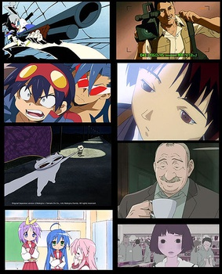
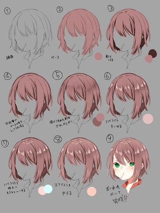
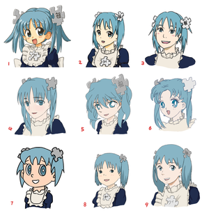
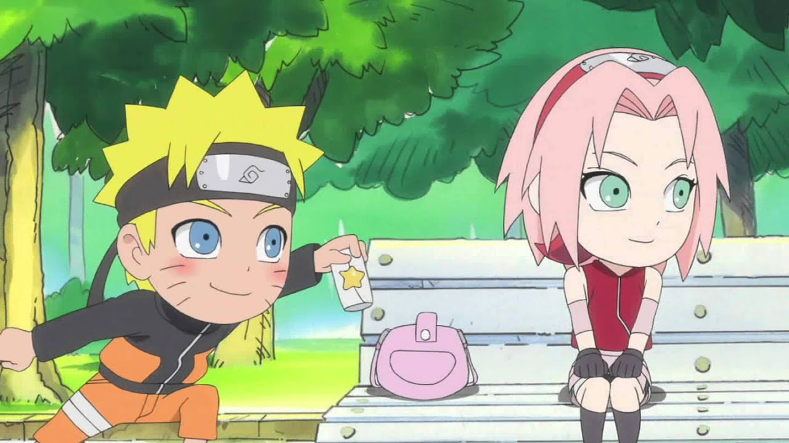
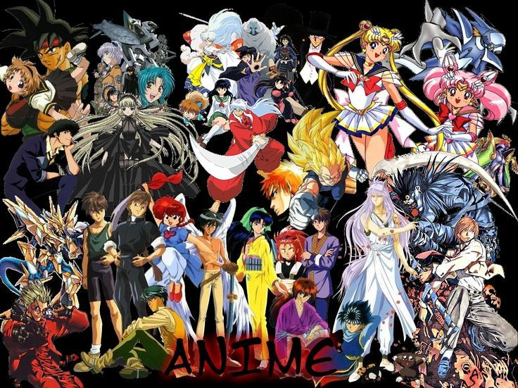
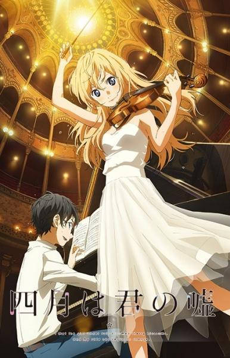

Атрибутите на японската анимация
Анимето се характеризира основно с използването на ограничена анимация, плосък израз, прекъсване на времето, тематичен обхват, присъствие на исторически фигури, сложна повествователна линия  и най-вече с особен стил на рисуване, като героите се характеризират с големи и овални очи, с много отчетливи линии, ярки цветове и намалено движение на устните.
Техники
Съвременните анимета следват типичен процес на производство на анимация, включващ създаване на сценарий, озвучаване, дизайн на героите. От 90-те години на миналия век аниматорите все по-често използват компютърна анимация, за да подобрят ефективността на производствения процес. Ранните аниме произведения са експериментални и се състоят от изображения, нарисувани на черни дъски, стоп-моушън анимация на изрезки от хартия и силуетна анимация. През XXI в. използването на други анимационни техники се ограничава предимно до независими късометражни филми, включително произведенията на стоп моушън куклена анимация, създадени от Тадахито Мочинага, Кихачиро Кавамото и Томоясу Мурата. Компютрите са интегрирани в анимационния процес през 90-те години на ХХ век, като творби като " Ghost in the Shell" и " Princess Mononoke" смесват кел-анимация с компютърно генерирани изображения. Fuji Film, основна компания за производство на кел, обявява, че ще спре производството на кел, което предизвиква паника в индустрията за осигуряване на внос на кел и ускорява преминаването към цифрови процеси.
Преди цифровата ера аниметата се произвеждат с традиционни методи за анимация, като се използва подходът "от поза до поза". По-голямата част от масовите анимета използват по-малко изразителни ключови кадри и повече междинна анимация.
Японските анимационни студия са били пионери на много ограничени анимационни техники и са дали на анимето различен набор от конвенции. За разлика от анимацията на Дисни, където акцентът е върху движението, анимето набляга на качеството на изкуството и позволява на ограничените анимационни техники да компенсират

липсата на време, отделено за движение. Такива техники често се използват не само за спазване на крайните срокове, но и като художествени похвати. Сцените в анимето поставят акцент върху постигането на триизмерни изгледи, а фоновете са от съществено значение за създаването на атмосферата на произведението. Фонът невинаги е измислен и понякога се основава на реални места, както е показано в "Howl's Moving Castle" и "The Melancholy of Haruhi Suzumiya".
Кинематографичните ефекти на анимето се отличават от сценичните постановки, които се срещат в американската анимация. Анимето е заснето кинематографично като с камера, включително панорамиране, приближаване, снимки от разстояние и под ъгъл до по-сложни динамични кадри, които трудно биха се получили в реалността. В аниме анимацията се създава преди озвучаването, за разлика от американската анимация, в която първо се озвучава.
Герои
Пропорциите на тялото на човешките аниме герои са склонни да отразяват точно пропорциите на човешкото тяло в действителност. Височината на главата се счита от художника като основна единица за пропорция. Височината на главата може да варира, но повечето аниме герои са високи около седем до осем глави. Аниме художниците понякога правят умишлени модификации на пропорциите на тялото, за да създадат супер деформирани герои, които имат непропорционално малко тяло в сравнение с главата; много супер деформирани герои са високи от две до четири глави. Някои аниме произведения като Crayon Shin-chan напълно пренебрегват тези пропорции, по такъв начин, че те приличат на карикатурни западни карикатури.

Косата в анимето често е неестествено жива и цветна или уникално оформена. Движението на косата в анимето е преувеличено и „екшън с коса“ се използва, за да се подчертае действието и емоциите на героите за допълнителен визуален ефект. Poitras проследява цвета на прическата, за да покрие илюстрациите върху манга, където привличащите погледа произведения на изкуството и цветните тонове са привлекателни за детската манга. Въпреки че се произвежда за вътрешния пазар, анимето включва герои, чиято раса или националност не винаги са дефинирани и това често е умишлено решение, като например в анимационния сериал Pokémon.
Художниците на аниме и манга често черпят от общ канон на емблематични илюстрации за изражение на лицето, за да обозначат определени настроения и мисли. Тези техники често са различни по форма от техните колеги в западната анимация и включват фиксирана иконография, която се използва като стенография за определени емоции и настроения. Използват се различни визуални символи, включително капки пот за изобразяване на нервност, видимо изчервяване за смущение или светещи очи за интензивен отблясък. Друга повтаряща се забава е използването на чиби (деформиран, опростен дизайн на героите) фигури за комично подчертаване на емоции като объркване или смущение.

Често срещана конвенция за дизайна на аниме герои е преувеличения размер на очите. Анимацията на герои с големи очи в анимето може да се проследи до Осаму Тезука, който е бил дълбоко повлиян от такива ранни анимационни герои като Бети Буп, която е нарисувана с непропорционално големи очи. Тезука е централна фигура в историята на анимето и мангата, чийто емблематичен художествен стил и дизайн на героите позволяват цялата гама от човешки емоции да бъде изобразена единствено през очите. Художникът добавя променливи цветови нюанси към очите и особено към роговицата, за да им придаде по-голяма дълбочина. Обикновено се използва смес от светъл нюанс, цвят на тона и тъмен нюанс. Културният антрополог Мат Торн твърди, че японските аниматори и публика не възприемат такива стилизирани очи като по своята същност повече или по-малко чужди. Въпреки това, не всички аниме герои имат големи очи. Например, произведенията на Хаяо Миядзаки са известни с това, че имат реалистично пропорционални очи, както и реалистични цветове на косата на героите си.
Жанрове
Аниметата често се класифицират по целева демографска група, включително детски, момичета, момчета и разнообразна гама от жанрове, насочени към възрастна аудитория. Shoujo и shounen анимето понякога съдържат елементи, популярни сред децата от двата пола, в опит да придобият привлекателност за кръстосване.

Анимето за възрастни може да има по-бавно темпо или по-голяма сложност на сюжета, което по-младата публика обикновено може да намери за непривлекателна, както и теми и ситуации за възрастни. Подгрупа от аниме произведения за възрастни, включващи порнографски елементи, са обозначени с „R18“ в Япония и са международно известни като хентай (произхождащи от перверзник (変態, хентай)). За разлика от тях, някои аниме поджанрове включват ечи, сексуални теми или подтонове без изображения на полов акт, както е типично в жанровете комедия или харем; поради популярността си сред юношите и възрастните аниме ентусиасти, включването на такива елементи се счита за форма на фен услуга. Някои жанрове изследват хомосексуалните романси, като яой (мъжка хомосексуалност) и юри (женска хомосексуалност). Макар че често се използват в порнографски контекст, термините yaoi и yuri също могат да се използват широко в по-широк контекст, за да опишат или фокусират върху темите или развитието на самите взаимоотношения.
Музика

За разлика от много европейски и американски поп песни японската аниме музика често се отличава с дълги, драматични мелодии, съчетани със сложни акорди, които се сменят бързо. За пример "Zen Zen Zense" от "Your Name" обаче сменя акордите си много бързо. Написана в си мажор, тя следва модела A - B - C - D - D' - E - E' (като всяка буква представлява нов раздел), динамично заменяйки акордите в и извън музиката на всеки няколко такта. Мелодиите са по-дълги, те образуват извисяващи се музикални линии над акордите, вместо запомнящите се мелодии на поп музиката. "Hikaru Nara" от "Your Lie in April", "Cruel Angel's Thesis" от "Evangelion" и заглавната тема на "Princess Mononoke" следват този модел, въпреки драстичните разлики в стила: много промени в акордите, съчетани с дълги, красиви, мелодични линии. Съчетайте това с жизнерадостните, наподобяващи акустичен рок барабани, кичозните медни духови и аналогови струнни инструменти и аниме усещането започва да се появява. Може би в това се крие златната нишка, която създава особеното усещане, свързано с музиката.
Разбира се, не всяка песен в анимето има това усещане и може би това е за добро - така се прекъсва част от емоцията. Но в някои от тези песни се съдържа определен тип емоция, която просто предизвиква тези образи. Може би не сме се доближили до това да уловим какво всъщност е това чувство - но от друга страна, ще го познаем, когато го чуем.
Известни, иконични аниме песни:
- “Guren no Yumiya” (“Attack on Titan” season 1)
- “Nightmare” - the WORLD (“Death Note”)
- “Gurenge” (“Demon Slayer” season 1)
- “Blue Bird” (“Naruto Shippuden” Opening 3)